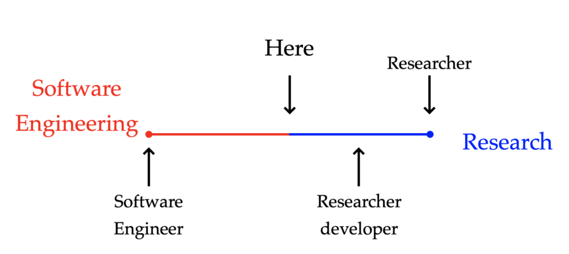
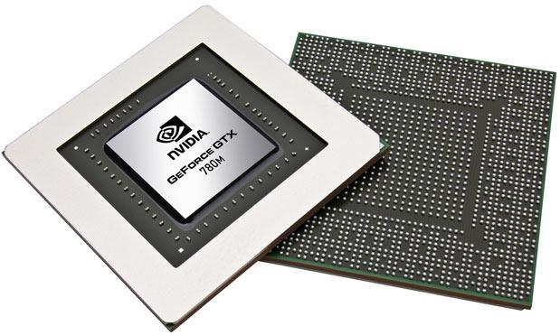

Research Software Engineer?

A new role in the department
Mission
- Develop CFD software (xcompact3d, nektar++, pyFR).
- Provide software engineering expertise.
- Promote software development best practices.
- Deliver workshop/training courses.
GPU support for xcompact3d

First step: infrastructure overhaul
- Automated software tests.
- Continuous Integration (GitHub actions).
- Portable compilation process.
things I can help you with
- Code review, code organisation.
- Documentation, software testing.
- Version control (Git).
- Packaging and distribution, code reuse.
- Data analysis workflows, reproducibility.
- Development environments (e.g. text editors/IDEs).
- General programming advice/questions.
Contact
t.lestang@imperial.ac.uk
Room 420, glass office on the right
In Mondays, Wednesdays (Fridays)
I don’t know (much) about
- Configuring printers
- Recovering passwords
- Fixing your laptop
- Managing software licences
- … and many other things.
About me
- Studied Physics at Université Paris-Saclay and ENS Lyon.
- PhD in computational physics (Lattice Boltzmann + rare event sampling algorithms).
- Performance engineer at HPC center Stuttart.
- RSE in the Oxford Research Software Engineering group.
Physicist turned RSE.
Let’s chat

- Questions.
- Things you would like to learn about.
- General software-related issues you’ve been having.
- Things you are interested in at the moment.